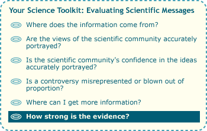

When evaluating a scientific idea, scientists carefully consider the relevant evidence …

… and you can too. You've read an article in the newspaper, done a little more research, uncovered several lines of evidence, and now it's time to weigh those data for yourself. Here are some questions to ask as you consider the evidence:
-
Does the evidence suggest correlation or causation? In other words, do the data suggest that two factors (e.g., high blood pressure and heart attack rates) are correlated with one another or that changes in one actually cause changes in the other?
- Is the evidence based on a large sample of observations (e.g., 10,000 patients with high blood pressure) or just a few isolated incidents?
- Does the evidence back up all the claims made in the article (e.g., about the cause of heart attacks, a new blood pressure drug, and preventative strategies) or just a few of them?
- Are the claims in the article supported by multiple lines of evidence (e.g., from clinical trials, epidemiological studies, and animal studies)?
- Does the scientific community find the evidence convincing?
For example, our sample article on global warming mentions one relevant line of evidence — ice cores — but provides few details. A little additional research reveals that ice cores contain bubbles of air captured from Earth's atmosphere many hundreds of thousands of years ago. Those air bubbles contain isotopes of oxygen that provide an indication of past temperatures. These samples suggest that, historically, global temperatures have risen and fallen in step with carbon dioxide levels. And further research into global warming uncovers other lines of evidence — for example: modern atmospheric records indicate that human activities have been increasing the concentrations of carbon dioxide and other greenhouse gases in the atmosphere, modern climate records indicate that the climate is currently warming, and models of the Earth's atmosphere provide a picture of why increased carbon dioxide levels might lead to higher temperatures. The scientific community finds this evidence convincing.
FOLLOW THE MONEY
When examining the evidence behind a scientific issue, it's worth paying attention to the funding source for that research. Is it a group with no particular stake in the outcome (like the National Science Foundation), or is it a group with a more personal interest in the issue? Mars Incorporated, for example, funds research on the benefits of chocolate, and tobacco companies have funded research on the health effects of smoking. If research is funded by an interested party, it makes sense to examine that study carefully. Do its findings fit with those of other studies? Does the study seem to be fairly designed? Scientists strive to design fair tests and assess the evidence without bias, but because scientists are human too, biases sometimes sneak in and can take time to be corrected. For example, several studies have found that research funded by pharmaceutical companies is more likely to produce results favoring the company's product than is research with other funding sources.
To learn more, take a side trip to who pays for science?